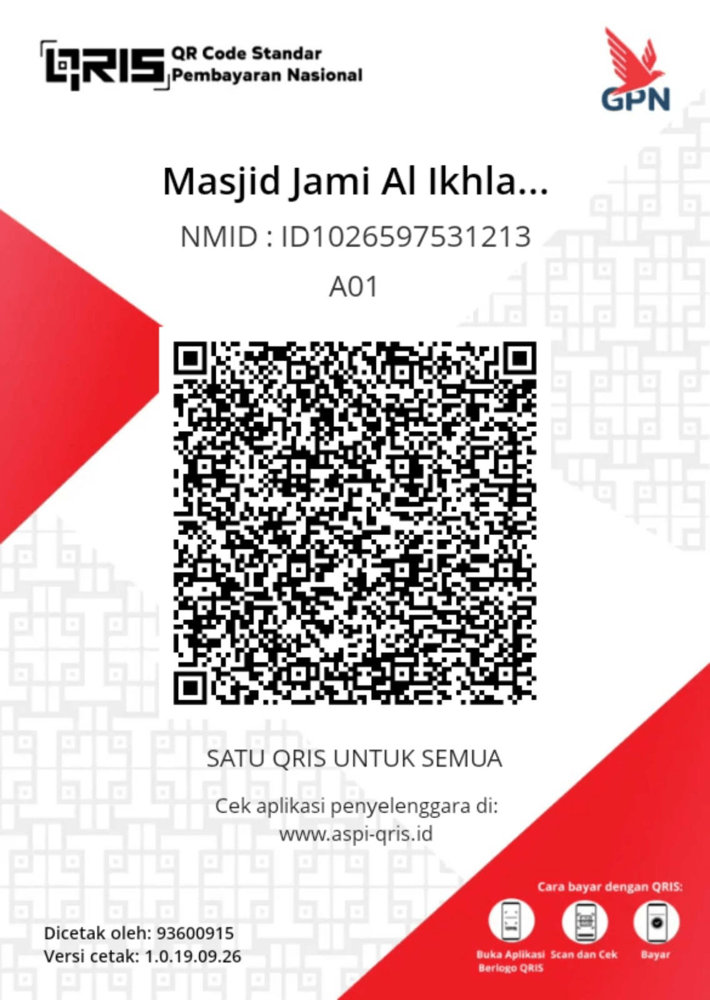

Masjid Jami' Al-Ikhlas Kebagusan
Pusat Dakwah, Pendidikan & Pelayanan Umat — Standar Nasional & Internasional
Selamat Datang di Masjid Jami' Al-Ikhlas Kebagusan
"Membangun Umat yang Ikhlas, Berilmu, dan Beramal Shalih" — Masjid kebanggaan warga Kebagusan, Pasar Minggu, Jakarta Selatan dengan standar nasional & internasional.
Lihat Kegiatan KamiProfil Masjid
Sekilas tentang Masjid Jami' Al-Ikhlas Kebagusan
Visi
Menjadi masjid percontohan bertaraf nasional dan internasional yang menjadi pusat peradaban Islam, dakwah, pendidikan, serta pemberdayaan umat di wilayah Kebagusan dan sekitarnya.
Misi
1. Memakmurkan masjid dengan sholat berjamaah 5 waktu & sholat Jumat.
2. Menyelenggarakan Majlis Ta'lim & Dzikir rutin.
3. Mengembangkan pendidikan anak usia dini & remaja Islam.
4. Mengelola Baitul Mal untuk kemaslahatan umat.
5. Menyediakan fasilitas ramah difabel, lansia, dan anak.
Standar Masjid
Mengacu pada Permen Agama No. 2 Tahun 2019 tentang Standar Masjid Nasional & standar Islamic Affairs & Charitable Activities Department (IACAD) untuk masjid ramah lingkungan, aksesibel, dan berkelas internasional.
Data Teknis
Luas Tanah: ± 210 m²
Kapasitas Jamaah: ± 1.500 orang
Arah Kiblat: 293° (Azimut)
Status: Wakaf / Milik Umat
Afiliasi: Kemenag Jaksel & MUI
💝 Donasi Digital / Amal Online (Klik Tombol Konfirmasi Dan Isi Agar Amal Anda Dimuat Secara Real Time Di Buku Kas Digital Dalam Website Ini)
Beramal mudah via QRIS, Gopay, atau Transfer Bank — Otomatis tercatat di Buku Kas Masjid
Scan QRIS
Scan barcode di bawah dengan aplikasi e-wallet / m-banking apapun

⚠️ Gambar QRIS belum diupload. Tampilkan fallback.'">Gopay / GoBiz Belum Tersedia
Transfer langsung ke akun Gopay masjid
Nomor Gopay:
0812-XXXX-XXXX
a.n. DKM Masjid Al-Ikhlas

Transfer Bank (BSI) Belum Tersedia
Transfer via Bank Syariah Indonesia
No. Rekening:
700-xxxx-xxxx
a.n. DKM Masjid Jami' Al-Ikhlas
Bank Syariah Indonesia (BSI)
Majlis Ta'lim
Kajian rutin untuk seluruh lapisan umat
Kajian Subuh (Setiap Hari)
Waktu: Ba'da Sholat Subuh (04.45 - 05.30 WIB)
Materi: Tafsir Al-Qur'an, Hadits Arbain, Fiqh Ibadah
Pemateri: Belum ada Kegiatan & Nara Sumber
Kajian Maghrib (Senin & Kamis)
Waktu: Ba'da Maghrib (18.15 - 19.15 WIB)
Materi: Sirah Nabawiyah, Aqidah Ahlussunnah
Pemateri: Belum ada Kegiatan & Nara Sumber
Kajian Ibu-ibu (Selasa)
Waktu: 09.00 - 11.00 WIB
Materi: Fiqh Wanita, Parenting Islami, Rumah Tangga Sakinah
Pemateri: Belum ada Kegiatan & Nara Sumber
Kajian Bapak-bapak (Ahad Pagi)
Waktu: 06.30 - 08.00 WIB
Materi: Fiqh Muamalah, Ekonomi Syariah, Kepemimpinan
Pemateri: Belum ada Kegiatan & Nara Sumber
Kajian Pemuda / Remaja (Sabtu Malam)
Waktu: 20.00 - 21.30 WIB
Materi: Islam & Modernitas, Karir, Pernikahan Muda
Pemateri: Belum ada Kegiatan & Nara Sumber
Kajian Bulanan Akbar
Waktu: Ahad pertama tiap bulan, ba'da Subuh
Pemateri: Ulama nasional & dai internasional
Live streaming: YouTube & Facebook resmi masjid
Majlis Dzikir
Menghidupkan hati dengan mengingat Allah SWT
| Nama Dzikir | Jadwal | Waktu | Pimpinan |
|---|---|---|---|
| ⏳ Memuat data... | |||
Petugas Sholat Jumat
Jadwal khatib, imam, muadzin, dan bilal sholat Jumat
| Minggu | Tanggal | Khatib | Imam | Muadzin | Bilal |
|---|---|---|---|---|---|
| ⏳ Memuat data... | |||||
Petugas Sholat Rawatib 5 Waktu
Imam, muadzin & khatib sholat fardhu berjamaah
| Waktu | Jam | Imam Tetap | Imam Pengganti | Muadzin |
|---|---|---|---|---|
| ⏳ Memuat data... | ||||
Badan Pengembangan Masjid
Struktur & program pengembangan masjid terintegrasi
Bidang Ibadah
Mengelola sholat fardhu, Jumat, Tarawih, Ied, dan ibadah sunnah lainnya.
Bidang Pendidikan Anak
TPA, PAUD Islam, Remaja Masjid, Bina Prestasi Anak.
Baitul Mal Wa Tanwil
Pengelolaan infaq, shodaqoh, zakat, wakaf, & investasi umat.
Pelaksanaan PHBI
Peringatan Hari Besar Islam: Maulid, Isra Mi'raj, Ramadhan, Idul Fitri/Adha, Muharram.
Kesejahteraan Masjid
Kebersihan, keamanan, marbot, honor imam, & fasilitas jamaah.
Buku Kas Masjid
Pembukuan transparan, akuntabel, & diaudit tahunan.
Bidang Ibadah
Koordinator: Menunggu Hasil Musyawarah.
Sholat 5 Waktu Berjamaah
Mengatur imam, muadzin, saf, & kekhusyukan jamaah sesuai sunnah.
Sholat Jumat
Koordinasi khatib, imam, bilal, pengumpulan infaq Jumat.
Sholat Tarawih & Witir
Pelaksanaan selama Ramadhan dengan imam hafidz 30 juz.
Sholat Ied
Pelaksanaan Idul Fitri & Adha di lapangan & masjid.
Qiyamul Lail
Tahajud berjamaah 10 malam terakhir Ramadhan.
Pembinaan Mualaf
Bimbingan syahadat & fiqh dasar bagi saudara baru Muslim.
Bidang Pendidikan Anak
Koordinator: Menunggu Hasil Musyawarah
Baitul Mal Wa Tanwil (BMT)
Pengelolaan keuangan umat secara syariah & transparan
Infaq & Shodaqoh
Kotak infaq Jumat, infaq rutin bulanan, infaq event.
Zakat
UPZ (Unit Pengumpul Zakat) resmi Baznas — zakat fitrah, maal, profesi.
Wakaf
Wakaf uang, tanah, Al-Qur'an, & aset produktif umat.
Tanwil (Investasi)
Koperasi syariah, unit usaha masjid, penyewaan aset.
Santunan
Yatim, dhuafa, janda, guru ngaji, & bencana.
Laporan Publik
Laporan keuangan dipublikasikan setiap bulan di mading & website.
Susunan Panitia PHBI
Panitia Pelaksanaan Hari Besar Islam
| Jabatan | Nama | No HP |
|---|---|---|
| ⏳ Memuat data... | ||
Bidang Kesejahteraan Masjid
Kesejahteraan pengurus, marbot, imam, & fasilitas jamaah
Honor Imam & Muadzin
Tunjangan bulanan sesuai standar Kemenag & kemampuan masjid.
Marbot & Kebersihan
10 petugas kebersihan & 4 marbot dengan gaji tetap + BPJS Ketenagakerjaan.
Keamanan
Tim security 24 jam, CCTV 4 titik, parkir tertib.
Ramah Difabel
Ramp, toilet difabel, guiding block, tempat wudhu khusus lansia & difabel.
Masjid Hijau
Panel surya, sumur resapan, taman, manajemen sampah 3R.
Fasilitas Jamaah
Tempat wudhu pria/wanita terpisah, musala, perpustakaan, ruang laktasi.
📒 Buku Kas Digital Masjid
Data real-time dari Dashboard Input Masjid LIVE
💰 Total Pemasukan
💸 Total Pengeluaran
🏦 Saldo Akhir
| No | Tanggal | No. Bukti | Jenis | Kategori | Uraian | Jumlah | Saldo |
|---|---|---|---|---|---|---|---|
| ⏳ Memuat... | |||||||
Buku Kas Digital PHBI
Pembukuan khusus Hari Besar Islam — terpisah dari Buku Kas Masjid LIVE
💜 Total Pemasukan PHBI
🧡 Total Pengeluaran PHBI
💎 Saldo Kas PHBI
| No | Tanggal | No. Bukti | Jenis | Kategori | Nama Donatur | Uraian | Jumlah | Saldo |
|---|---|---|---|---|---|---|---|---|
| ⏳ Memuat data PHBI... | ||||||||
📘 Buku Kas Digital Santunan Yatim & Dhuafa
Pembukuan khusus Dana Santunan Yatim Piatu & Kaum Dhuafa — terpisah dari Buku Kas Masjid & PHBI LIVE
💚 Total Pemasukan Santunan
🧡 Total Pengeluaran Santunan
💎 Saldo Kas Santunan
| No | Tanggal | No. Bukti | Jenis | Kategori | Nama Donatur | Uraian | Jumlah | Saldo |
|---|---|---|---|---|---|---|---|---|
| ⏳ Memuat data Santunan... | ||||||||
Anggaran & Proposal
Program pengembangan masjid & peluang donasi
Kontak & Lokasi
Hubungi kami atau kunjungi masjid kami
Alamat
Jl. Ikhlas IV No. 22
Kel. Kebagusan, Kec. Pasar Minggu
Jakarta Selatan, DKI Jakarta 12520
Kontak
Telepon: (021) 7884-0000
WhatsApp: 0812-XXXX-XXXX
Email: info@masjidalikhlaskebagusan.or.id
Jam Operasional
Setiap hari: 04.00 - 22.00 WIB
Sekretariat DKM: 09.00 - 16.00 (Senin-Sabtu)